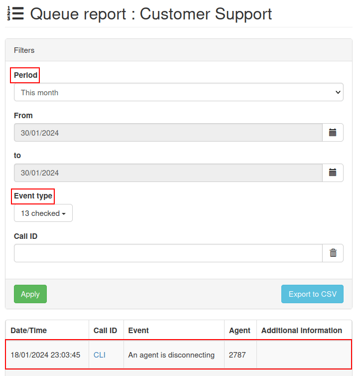

Call queues¶
A call queue is a system that organizes and routes incoming calls. When customers call a business, and all of the agents are busy, the call queue lines up the callers in sequential order, based on the time they called in.
The callers then wait on hold to be connected to the next available call center agent.
Implementing a call queue system reduces stress for employees, and helps build brand trust with customers. Many companies use call queues to set expectations with customers, and to distribute the workload equally amongst employees.
This document covers the process required to configure call queues (with advanced settings), as well as how to log into a call queue from the Odoo database.
See also
Add a queue¶
To add a call queue in Axivox, navigate to the Axivox management console. In the left menu, click Queues. Next, click Add a queue. Doing so reveals a blank New queue form with various fields to fill out.
Name¶
Once the New queue page appears, enter the Name of the queue.
Internal extension¶
Choose an Internal extension for the queue. This is a number to be dialed by users of the database to reach the login prompt for the queue.
Strategy¶
Next, is the Strategy field. This field determines the call routing of received calls into this queue.
The following choices are available in the Strategy drop-down menu:
Call all available agents
Calls the agent who has received the call for the longest time
Calls the agent who has received the least call
Call a random agent
Call agents one after the other
Call agents one after the other starting with the first in the list
Choose a strategy that best meets the company’s needs for customers in the queue.
Maximum waiting time in seconds¶
In the Maximum waiting time in seconds field, determine the longest time a customer waits in the queue before going to a voicemail, or wherever else they are directed to in a dial plan. Enter a time in seconds.
Maximum duration of ringing at an agent¶
In the Maximum duration of ringing at an agent field, determine the longest time an individual agent’s line rings before moving on to another agent, or moving to the next step in the dial plan. Enter a time in seconds.
Adding agents¶
The final two fields on the New queue form revolve around adding agents. Adding Static agents and Dynamic agents are two pre-configured methods for adding agents onto the call queue during the configuration.
Static agents¶
When Static agents are added, these agents are automatically added to the queue without the need to log in to receive calls.
Dynamic agents¶
When Dynamic agents are added, these agents have the ability to log into this queue. They are not logged-in automatically, and must log in to receive calls.
Be sure to Save the changes, and click Apply changes in the upper-right corner to implement the change in production.
Agent connection¶
There are three ways call agents can connect to an Axivox call queue:
Dynamic agents connect automatically.
Manager logs in specific agent(s), via the Axivox management console.
Agent connects to the queue in Odoo, via the VoIP widget.
See also
See the documentation on setting Dynamic agents in the Axivox management console.
Connect via Axivox queue¶
After the initial configuration of the call queue is completed, with the changes saved and implemented, a manager can log into the Axivox management console and connect dynamic agents to the queue manually.
To connect an agent, click Queues, located in the left-hand column. Doing so reveals the Queues dashboard, with a few different columns listed:
Name: name of the queue.
Extension: number of the extension to be dialed to reach the queue.
Agent Connection: number to dial to log into the queue.
Agent disconnection: number to dial to log out of the queue.
Connected Agents: name of agent connected to the queue.
The following buttons are also available on the Queues dashboard:
Connect an agent: manually connect an agent to the queue.
Report: run a report on the queue.
Delete: delete the queue.
Edit: make changes to the settings of the queue.
When agents are connected to the queue, or are live with a customer, they are displayed under the Connected Agents column.
If they are static agents, they always show up as connected.
Connect an agent by clicking the orange button labeled, Connect an agent. Then, select the desired agent’s name from the drop-down menu, and click Connect.

See also
For more information on static and dynamic agents, see this documentation:
Report¶
Click Report to check on the reporting for a particular queue, in order to see who connected when, and what phone calls came in and out of the queue. This information is showcased on a separate Queue report page, when the green Report button is clicked.
Reports can be customized by date in the Period field, and specified in the From and to fields. The information can be organized by Event type, and Call ID.
When the custom configurations have been entered, click Apply.
Each report can be exported to a CSV file for further use and analysis, via the Export to CSV button.
When the Event type field is clicked, a drop-down menu appears with the following options:
The caller quit
An agent is connecting
An agent is disconnecting
The call was terminated (agent hangs up)
The call was terminated (caller hangs up)
The caller is connected to an agent.
Someone is entering the queue
The caller exits the queue (no agent is connected)
The caller exits the queue (timeout)
No one is answering
No one is answering, the caller hangs up
Transfer
Blind Transfer

There is no limit to how many options can be selected from the Event type drop-down menu.
Clicking Check all selects all the available options from the drop-down menu, and clicking Uncheck all removes all selections from the drop-down menu.
To select an individual Event type, click on the desired option in the drop-down menu.
Connect to queue on Odoo¶
Dynamic agents can connect manually to the Axivox call queue from the Odoo VoIP widget, once the VoIP app is configured for the individual user in Odoo.
To access the Odoo VoIP widget, click the ☎️ (phone) icon in the upper-right corner of the screen, from any window within Odoo.
See also
For more information on the Odoo VoIP widget, see this documentation: VoIP widget
For an agent to connect to the call queue, simply dial the Agent connection number, and press the green call button 📞 (phone) icon in the VoIP widget. Then, the agent hears a short, two-second message indicating the agent is logged in. The call automatically ends (disconnects).
To view the connected agents in a call queue, navigate to the Axivox management console, and click Queues, located in the left-hand column.
Then, click the green Refresh button at the top of the Connected agents column. Any agent (static or dynamic) that is connected to the queue currently, appears in the column next to the queue they are logged into.
To log out of the queue, open the Odoo VoIP widget, dial the Agent disconnection number, and press the green call button 📞 (phone) icon. The agent is disconnected from the queue after a short, two-second message.
To manually log a dynamic agent out of a call queue, navigate to the Axivox management console, and click Queues, located in the left-hand column. Then, click the green Refresh button at the top of the Connected agents column.
To disconnect an agent manually, click the red Disconnect button, and they are immediately disconnected. This can be helpful in situations where agents forget to log out at the end of the day.